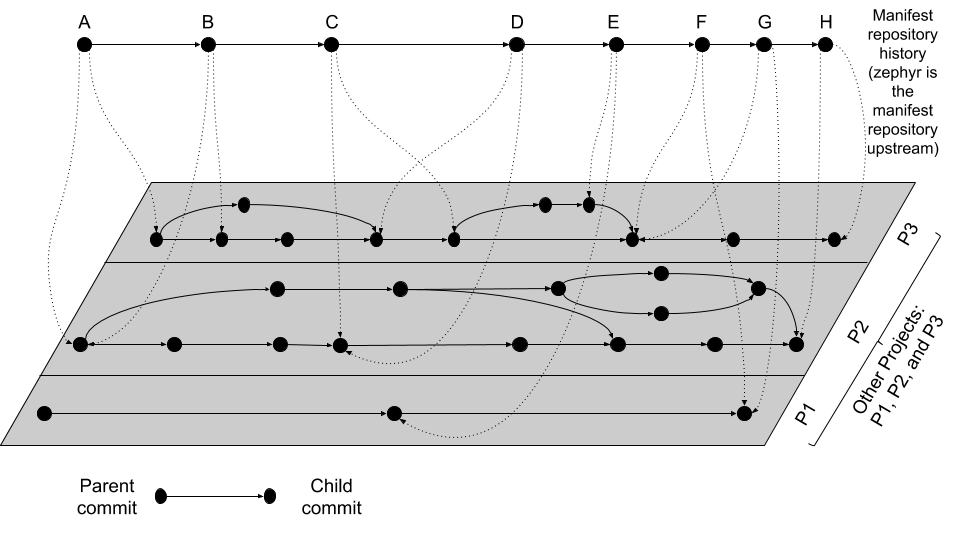

West Manifests
This page contains detailed information about west’s multiple repository model,
manifest files, and the west manifest command. For API documentation on the
west.manifest module, see west.manifest. For a more general
introduction and command overview, see Basics.
Multiple Repository Model
West’s view of the repositories in a west workspace, and their history, looks like the following figure (though some parts of this example are specific to upstream Zephyr’s use of west):

West multi-repo history
The history of the manifest repository is the line of Git commits which is “floating” on top of the gray plane. Parent commits point to child commits using solid arrows. The plane below contains the Git commit history of the repositories in the workspace, with each project repository boxed in by a rectangle. Parent/child commit relationships in each repository are also shown with solid arrows.
The commits in the manifest repository (again, for upstream Zephyr this is the zephyr repository itself) each have a manifest file. The manifest file in each commit specifies the corresponding commits which it expects in each of the project repositories. This relationship is shown using dotted line arrows in the diagram. Each dotted line arrow points from a commit in the manifest repository to a corresponding commit in a project repository.
Notice the following important details:
Projects can be added (like
P1between manifest repository commitsDandE) and removed (P2between the same manifest repository commits)Project and manifest repository histories don’t have to move forwards or backwards together:
P2stays the same fromA → B, as doP1andP3fromF → G.P3moves forward fromA → B.P3moves backward fromC → D.
One use for moving backward in project history is to “revert” a regression by going back to a revision before it was introduced.
Project repository commits can be “skipped”:
P3moves forward multiple commits in its history fromB → C.In the above diagram, no project repository has two revisions “at the same time”: every manifest file refers to exactly one commit in the projects it cares about. This can be relaxed by using a branch name as a manifest revision, at the cost of being able to bisect manifest repository history.
Manifest Files
West manifests are YAML files. Manifests have a top-level manifest section
with some subsections, like this:
manifest:
remotes:
# short names for project URLs
projects:
# a list of projects managed by west
defaults:
# default project attributes
self:
# configuration related to the manifest repository itself,
# i.e. the repository containing west.yml
version: "<schema-version>"
group-filter:
# a list of project groups to enable or disable
In YAML terms, the manifest file contains a mapping, with a manifest
key. Any other keys and their contents are ignored (west v0.5 also required a
west key, but this is ignored starting with v0.6).
The manifest contains subsections, like defaults, remotes,
projects, and self. In YAML terms, the value of the manifest key is
also a mapping, with these “subsections” as keys. As of west v0.10, all of
these “subsection” keys are optional.
The projects value is a list of repositories managed by west and associated
metadata. We’ll discuss it soon, but first we will describe the remotes
section, which can be used to save typing in the projects list.
Remotes
The remotes subsection contains a sequence which specifies the base URLs
where projects can be fetched from.
Each remotes element has a name and a “URL base”. These are used to form
the complete Git fetch URL for each project. A project’s fetch URL can be set
by appending a project-specific path onto a remote URL base. (As we’ll see
below, projects can also specify their complete fetch URLs.)
For example:
manifest:
# ...
remotes:
- name: remote1
url-base: https://git.example.com/base1
- name: remote2
url-base: https://git.example.com/base2
The remotes keys and their usage are in the following table.
Key |
Description |
|---|---|
|
Mandatory; a unique name for the remote. |
|
A prefix that is prepended to the fetch URL for each project with this remote. |
Above, two remotes are given, with names remote1 and remote2. Their URL
bases are respectively https://git.example.com/base1 and
https://git.example.com/base2. You can use SSH URL bases as well; for
example, you might use git@example.com:base1 if remote1 supported Git
over SSH as well. Anything acceptable to Git will work.
Projects
The projects subsection contains a sequence describing the project
repositories in the west workspace. Every project has a unique name. You can
specify what Git remote URLs to use when cloning and fetching the projects,
what revisions to track, and where the project should be stored on the local
file system. Note that west projects are different from modules.
Here is an example. We’ll assume the remotes given above.
manifest:
# [... same remotes as above...]
projects:
- name: proj1
description: the first example project
remote: remote1
path: extra/project-1
- name: proj2
description: |
A multi-line description of the second example
project.
repo-path: my-path
remote: remote2
revision: v1.3
- name: proj3
url: https://github.com/user/project-three
revision: abcde413a111
In this manifest:
proj1has remoteremote1, so its Git fetch URL ishttps://git.example.com/base1/proj1. The remoteurl-baseis appended with a/and the projectnameto form the URL.Locally, this project will be cloned at path
extra/project-1relative to the west workspace’s root directory, since it has an explicitpathattribute with this value.Since the project has no
revisionspecified,masteris used by default. The current tip of this branch will be fetched and checked out as a detachedHEADwhen west next updates this project.proj2has aremoteand arepo-path, so its fetch URL ishttps://git.example.com/base2/my-path. Therepo-pathattribute, if present, overrides the defaultnamewhen forming the fetch URL.Since the project has no
pathattribute, itsnameis used by default. It will be cloned into a directory namedproj2. The commit pointed to by thev1.3tag will be checked out when west updates the project.proj3has an expliciturl, so it will be fetched fromhttps://github.com/user/project-three.Its local path defaults to its name,
proj3. Commitabcde413a111will be checked out when it is next updated.
The available project keys and their usage are in the following table.
Sometimes we’ll refer to the defaults subsection; it will be described
next.
Key(s) |
Description |
|---|---|
|
Mandatory; a unique name for the project. The name cannot be one of the reserved values “west” or “manifest”. The name must be unique in the manifest file. |
|
Optional, an informational description of the project. Added in west v1.2.0. |
|
Mandatory (one of the two, but not both). If the project has a If the project has a If the project has neither, the |
|
Optional. If given, this is concatenated on to the remote’s
|
|
Optional. The Git revision that A project revision can be a branch, tag, or SHA. The default Using |
|
Optional. Relative path specifying where to clone the repository
locally, relative to the top directory in the west workspace. If missing,
the project’s |
|
Optional. If given, a positive integer which creates a shallow history
in the cloned repository limited to the given number of commits. This
can only be used if the |
|
Optional. If given, a relative path to a YAML file within the project
which describes additional west commands provided by that project. This
file is named |
|
Optional. If |
|
Optional, a list of groups the project belongs to. See Project Groups for details. |
|
Optional. You can use this to make |
|
Optional. The value is an arbitrary YAML value. See Repository user data. |
Footnotes
Defaults
The defaults subsection can provide default values for project
attributes. In particular, the default remote name and revision can be
specified here. Another way to write the same manifest we have been describing
so far using defaults is:
manifest:
defaults:
remote: remote1
revision: v1.3
remotes:
- name: remote1
url-base: https://git.example.com/base1
- name: remote2
url-base: https://git.example.com/base2
projects:
- name: proj1
description: the first example project
path: extra/project-1
revision: master
- name: proj2
description: |
A multi-line description of the second example
project.
repo-path: my-path
remote: remote2
- name: proj3
url: https://github.com/user/project-three
revision: abcde413a111
The available defaults keys and their usage are in the following table.
Key |
Description |
|---|---|
|
Optional. This will be used for a project’s |
|
Optional. This will be used for a project’s |
Self
The self subsection can be used to control the manifest repository itself.
As an example, let’s consider this snippet from the zephyr repository’s
west.yml:
manifest:
# ...
self:
path: zephyr
west-commands: scripts/west-commands.yml
This ensures that the zephyr repository is cloned into path zephyr, though
as explained above that would have happened anyway if cloning from the default
manifest URL, https://github.com/zephyrproject-rtos/zephyr. Since the
zephyr repository does contain extension commands, its self entry declares
the location of the corresponding west-commands.yml relative to the
repository root.
The available self keys and their usage are in the following table.
Key |
Description |
|---|---|
|
Optional. The path If not given, the basename of the path component in the manifest
repository URL will be used by default. For example, if the URL is
|
|
Optional. This is analogous to the same key in a project sequence element. |
|
Optional. This is also analogous to the |
Version
The version subsection declares that the manifest file uses features which
were introduced in some version of west. Attempts to load the manifest with
older versions of west will fail with an error message that explains the
minimum required version of west which is needed.
Here is an example:
manifest:
# Marks that this file uses version 0.10 of the west manifest
# file format.
#
# An attempt to load this manifest file with west v0.8.0 will
# fail with an error message saying that west v0.10.0 or
# later is required.
version: "0.10"
The pykwalify schema manifest-schema.yml in the west source code
repository is used to validate the manifest section.
Here is a table with the valid version values, along with information
about the manifest file features that were introduced in that version.
|
New features |
|---|---|
|
Initial support for the |
|
Support for |
|
Use of west v0.9.x is discouraged. This schema version is provided to allow users to explicitly request compatibility with west v0.9.0. However, west v0.10.0 and later have incompatible behavior for features that were introduced in west v0.9.0. You should ignore version “0.9” if possible. |
|
Support for:
|
|
Support for |
|
Support for |
|
Identical to |
|
Support for |
Note
Versions of west without any new features in the manifest file format do not
change the list of valid version values. For example, version:
"0.11" is not valid, because west v0.11.x did not introduce new
manifest file format features.
Quoting the version value as shown above forces the YAML parser to treat it
as a string. Without quotes, 0.10 in YAML is just the floating point value
0.1. You can omit the quotes if the value is the same when cast to string,
but it’s best to include them. Always use quotes if you’re not sure.
If you do not include a version in your manifest, each new release of west
assumes that it should try to load it using the features that were available in
that release. This may result in error messages that are harder to understand
if that version of west is too old to load the manifest.
Group-filter
See Project Groups.
Active and Inactive Projects
Projects defined in the west manifest can be inactive or active. The
difference is that an inactive project is generally ignored by west. For
example, west update will not update inactive projects, and west list
will not print information about them by default. As another example, any
Manifest Imports in an inactive project will be ignored by west.
There are two ways to make a project inactive:
Using the
manifest.project-filterconfiguration option. If a project is made active or inactive using this option, then the rules related to making a project inactive using itsgroups:are ignored. That is, if a regular expression inmanifest.project-filterapplies to a project, the project’s groups have no effect on whether it is active or inactive.See the entry for this option in Built-in Configuration Options for details.
Otherwise, if a project has groups, and they are all disabled, then the project is inactive.
See the following section for details.
Project Groups
You can use the groups and group-filter keys briefly described
above to place projects into groups, and to
enable or disable groups.
For example, this lets you run a west forall command only on the projects
in the group by using west forall --group. This can also let you make
projects inactive; see the previous section for more information on inactive
projects.
The next section introduces project groups. The following section describes
Enabled and Disabled Project Groups. There are some basic examples in
Project Group Examples. Finally, Group Filters and Imports
provides a simplified overview of how group-filter interacts with the
Manifest Imports feature.
Groups Basics
The groups: and group-filter: keys appear in the manifest like this:
manifest:
projects:
- name: some-project
groups: ...
group-filter: ...
The groups key’s value is a list of group names. Group names are strings.
You can enable or disable project groups using group-filter. Projects whose
groups are all disabled, and which are not otherwise made active by a
manifest.project-filter configuration option, are inactive.
For example, in this manifest fragment:
manifest:
projects:
- name: project-1
groups:
- groupA
- name: project-2
groups:
- groupB
- groupC
- name: project-3
The projects are in these groups:
project-1: one group, namedgroupAproject-2: two groups, namedgroupBandgroupCproject-3: no groups
Project group names must not contain commas (,), colons (:), or whitespace.
Group names must not begin with a dash (-) or the plus sign (+), but they may
contain these characters elsewhere in their names. For example, foo-bar and
foo+bar are valid groups, but -foobar and +foobar are not.
Group names are otherwise arbitrary strings. Group names are case sensitive.
As a restriction, no project may use both import: and groups:. (This
is necessary to avoid some pathological edge cases.)
Enabled and Disabled Project Groups
All project groups are enabled by default. You can enable or disable groups in both your manifest file and Configuration.
Within a manifest file, manifest: group-filter: is a YAML list of groups to
enable and disable.
To enable a group, prefix its name with a plus sign (+). For example,
groupA is enabled in this manifest fragment:
manifest:
group-filter: [+groupA]
Although this is redundant for groups that are already enabled by default, it can be used to override settings in an imported manifest file. See Group Filters and Imports for more information.
To disable a group, prefix its name with a dash (-). For example, groupA
and groupB are disabled in this manifest fragment:
manifest:
group-filter: [-groupA,-groupB]
Note
Since group-filter is a YAML list, you could have written this fragment
as follows:
manifest:
group-filter:
- -groupA
- -groupB
However, this syntax is harder to read and therefore discouraged.
In addition to the manifest file, you can control which groups are enabled and
disabled using the manifest.group-filter configuration option. This option
is a comma-separated list of groups to enable and/or disable.
To enable a group, add its name to the list prefixed with +. To disable a
group, add its name prefixed with -. For example, setting
manifest.group-filter to +groupA,-groupB enables groupA, and
disables groupB.
The value of the configuration option overrides any data in the manifest file.
You can think of this as if the manifest.group-filter configuration option
is appended to the manifest: group-filter: list from YAML, with “last entry
wins” semantics.
Project Group Examples
This section contains example situations involving project groups and active
projects. The examples use both manifest: group-filter: YAML lists and
manifest.group-filter configuration lists, to show how they work together.
Note that the defaults and remotes data in the following manifests
isn’t relevant except to make the examples complete and self-contained.
Note
In all of the examples that follow, the manifest.project-filter option
is assumed to be unset.
Example 1: no disabled groups
The entire manifest file is:
manifest:
projects:
- name: foo
groups:
- groupA
- name: bar
groups:
- groupA
- groupB
- name: baz
defaults:
remote: example-remote
remotes:
- name: example-remote
url-base: https://git.example.com
The manifest.group-filter configuration option is not set (you can ensure
this by running west config -D manifest.group-filter).
No groups are disabled, because all groups are enabled by default. Therefore,
all three projects (foo, bar, and baz) are active. Note that there
is no way to make project baz inactive, since it has no groups.
Example 2: Disabling one group via manifest
The entire manifest file is:
manifest:
projects:
- name: foo
groups:
- groupA
- name: bar
groups:
- groupA
- groupB
group-filter: [-groupA]
defaults:
remote: example-remote
remotes:
- name: example-remote
url-base: https://git.example.com
The manifest.group-filter configuration option is not set (you can ensure
this by running west config -D manifest.group-filter).
Since groupA is disabled, project foo is inactive. Project bar is
active, because groupB is enabled.
Example 3: Disabling multiple groups via manifest
The entire manifest file is:
manifest:
projects:
- name: foo
groups:
- groupA
- name: bar
groups:
- groupA
- groupB
group-filter: [-groupA,-groupB]
defaults:
remote: example-remote
remotes:
- name: example-remote
url-base: https://git.example.com
The manifest.group-filter configuration option is not set (you can ensure
this by running west config -D manifest.group-filter).
Both foo and bar are inactive, because all of their groups are
disabled.
Example 4: Disabling a group via configuration
The entire manifest file is:
manifest:
projects:
- name: foo
groups:
- groupA
- name: bar
groups:
- groupA
- groupB
defaults:
remote: example-remote
remotes:
- name: example-remote
url-base: https://git.example.com
The manifest.group-filter configuration option is set to -groupA (you
can ensure this by running west config manifest.group-filter -- -groupA;
the extra -- is required so the argument parser does not treat -groupA
as a command line option -g with value roupA).
Project foo is inactive because groupA has been disabled by the
manifest.group-filter configuration option. Project bar is active
because groupB is enabled.
Example 5: Overriding a disabled group via configuration
The entire manifest file is:
manifest:
projects:
- name: foo
- name: bar
groups:
- groupA
- name: baz
groups:
- groupA
- groupB
group-filter: [-groupA]
defaults:
remote: example-remote
remotes:
- name: example-remote
url-base: https://git.example.com
The manifest.group-filter configuration option is set to +groupA (you
can ensure this by running west config manifest.group-filter +groupA).
In this case, groupA is enabled: the manifest.group-filter
configuration option has higher precedence than the manifest: group-filter:
[-groupA] content in the manifest file.
Therefore, projects foo and bar are both active.
Example 6: Overriding multiple disabled groups via configuration
The entire manifest file is:
manifest:
projects:
- name: foo
- name: bar
groups:
- groupA
- name: baz
groups:
- groupA
- groupB
group-filter: [-groupA,-groupB]
defaults:
remote: example-remote
remotes:
- name: example-remote
url-base: https://git.example.com
The manifest.group-filter configuration option is set to
+groupA,+groupB (you can ensure this by running west config
manifest.group-filter "+groupA,+groupB").
In this case, both groupA and groupB are enabled, because the
configuration value overrides the manifest file for both groups.
Therefore, projects foo and bar are both active.
Example 7: Disabling multiple groups via configuration
The entire manifest file is:
manifest:
projects:
- name: foo
- name: bar
groups:
- groupA
- name: baz
groups:
- groupA
- groupB
defaults:
remote: example-remote
remotes:
- name: example-remote
url-base: https://git.example.com
The manifest.group-filter configuration option is set to
-groupA,-groupB (you can ensure this by running west config
manifest.group-filter -- "-groupA,-groupB").
In this case, both groupA and groupB are disabled.
Therefore, projects foo and bar are both inactive.
Group Filters and Imports
This section provides a simplified description of how the manifest:
group-filter: value behaves when combined with Manifest Imports.
For complete details, see Manifest Import Details.
Warning
The below semantics apply to west v0.10.0 and later. West v0.9.x semantics
are different, and combining group-filter with import in west v0.9.x
is discouraged.
In short:
if you only import one manifest, any groups it disables in its
group-filterare also disabled in your manifestyou can override this in your manifest file’s
manifest: group-filter:value, your workspace’smanifest.group-filterconfiguration option, or both
Here are some examples.
Example 1: no overrides
You are using this parent/west.yml manifest:
# parent/west.yml:
manifest:
projects:
- name: child
url: https://git.example.com/child
import: true
- name: project-1
url: https://git.example.com/project-1
groups:
- unstable
And child/west.yml contains:
# child/west.yml:
manifest:
group-filter: [-unstable]
projects:
- name: project-2
url: https://git.example.com/project-2
- name: project-3
url: https://git.example.com/project-3
groups:
- unstable
Only child and project-2 are active in the resolved manifest.
The unstable group is disabled in child/west.yml, and that is not
overridden in parent/west.yml. Therefore, the final group-filter
for the resolved manifest is [-unstable].
Since project-1 and project-3 are in the unstable group and are not
in any other group, they are inactive.
Example 2: overriding an imported group-filter via manifest
You are using this parent/west.yml manifest:
# parent/west.yml:
manifest:
group-filter: [+unstable,-optional]
projects:
- name: child
url: https://git.example.com/child
import: true
- name: project-1
url: https://git.example.com/project-1
groups:
- unstable
And child/west.yml contains:
# child/west.yml:
manifest:
group-filter: [-unstable]
projects:
- name: project-2
url: https://git.example.com/project-2
groups:
- optional
- name: project-3
url: https://git.example.com/project-3
groups:
- unstable
Only the child, project-1, and project-3 projects are active.
The [-unstable] group filter in child/west.yml is overridden in
parent/west.yml, so the unstable group is enabled. Since
project-1 and project-3 are in the unstable group, they are active.
The same parent/west.yml file disables the optional group, so
project-2 is inactive.
The final group filter specified by parent/west.yml is
[+unstable,-optional].
Example 3: overriding an imported group-filter via configuration
You are using this parent/west.yml manifest:
# parent/west.yml:
manifest:
projects:
- name: child
url: https://git.example.com/child
import: true
- name: project-1
url: https://git.example.com/project-1
groups:
- unstable
And child/west.yml contains:
# child/west.yml:
manifest:
group-filter: [-unstable]
projects:
- name: project-2
url: https://git.example.com/project-2
groups:
- optional
- name: project-3
url: https://git.example.com/project-3
groups:
- unstable
If you run:
west config manifest.group-filter +unstable,-optional
Then only the child, project-1, and project-3 projects are active.
The -unstable group filter in child/west.yml is overridden in the
manifest.group-filter configuration option, so the unstable group is
enabled. Since project-1 and project-3 are in the unstable group,
they are active.
The same configuration option disables the optional group, so project-2
is inactive.
The final group filter specified by parent/west.yml and the
manifest.group-filter configuration option is [+unstable,-optional].
Git Submodules in Projects
You can use the submodules keys briefly described above to force west update to also handle any Git
submodules configured in project’s git repository. The submodules key can
appear inside projects, like this:
manifest:
projects:
- name: some-project
submodules: ...
The submodules key can be a boolean or a list of mappings. We’ll describe
these in order.
Option 1: Boolean
This is the easiest way to use submodules.
If submodules is true as a projects attribute, west update will
recursively update the project’s Git submodules whenever it updates the project
itself. If it’s false or missing, it has no effect.
For example, let’s say you have a source code repository foo, which has
some submodules, and you want west update to keep all of them in sync,
along with another project named bar in the same workspace.
You can do that with this manifest file:
manifest:
projects:
- name: foo
submodules: true
- name: bar
Here, west update will initialize and update all submodules in foo. If
bar has any submodules, they are ignored, because bar does not have a
submodules value.
Option 2: List of mappings
The submodules key may be a list of mappings, one list element for
each desired submodule. Each submodule listed is updated recursively.
You can still track and update unlisted submodules with git commands
manually; present or not they will be completely ignored by west.
The path key must match exactly the path of one submodule relative
to its parent west project, as shown in the output of git submodule
status. The name key is optional and not used by west for now;
it’s not passed to git submodule commands either. The name key
was briefly mandatory in west version 0.9.0, but was made optional in 0.9.1.
For example, let’s say you have a source code repository foo, which has
many submodules, and you want west update to keep some but not all of them
in sync, along with another project named bar in the same workspace.
You can do that with this manifest file:
manifest:
projects:
- name: foo
submodules:
- path: path/to/foo-first-sub
- name: foo-second-sub
path: path/to/foo-second-sub
- name: bar
Here, west update will recursively initialize and update just the
submodules in foo with paths path/to/foo-first-sub and
path/to/foo-second-sub. Any submodules in bar are still ignored.
Repository user data
West versions v0.12 and later support an optional userdata key in projects.
West versions v0.13 and later supports this key in the manifest: self:
section.
It is meant for consumption by programs that require user-specific project metadata. Beyond parsing it as YAML, west itself ignores the value completely.
The key’s value is arbitrary YAML. West parses the value and makes it
accessible to programs using West APIs as the userdata attribute of
the corresponding west.manifest.Project object.
Example manifest fragment:
manifest:
projects:
- name: foo
- name: bar
userdata: a-string
- name: baz
userdata:
key: value
self:
userdata: blub
Example Python usage:
manifest = west.manifest.Manifest.from_file()
foo, bar, baz = manifest.get_projects(['foo', 'bar', 'baz'])
foo.userdata # None
bar.userdata # 'a-string'
baz.userdata # {'key': 'value'}
manifest.userdata # 'blub'
Manifest Imports
You can use the import key briefly described above to include projects from
other manifest files in your west.yml. This key can be either a
project or self section attribute:
manifest:
projects:
- name: some-project
import: ...
self:
import: ...
You can use a “self: import:” to load additional files from the repository
containing your west.yml. You can use a “project: … import:” to load
additional files defined in that project’s Git history.
West resolves the final manifest from individual manifest files in this order:
imported files in
selfyour
west.ymlfileimported files in
projects
During resolution, west ignores projects which have already been defined in
other files. For example, a project named foo in your west.yml
makes west ignore other projects named foo imported from your projects
list.
The import key can be a boolean, path, mapping, or sequence. We’ll describe
these in order, using examples:
A more formal description of how this works is last, after the examples.
Troubleshooting Note
If you’re using this feature and find west’s behavior confusing, try resolving your manifest to see the final results after imports are done.
Option 1: Boolean
This is the easiest way to use import.
If import is true as a projects attribute, west imports projects
from the west.yml file in that project’s root directory. If it’s
false or missing, it has no effect. For example, this manifest would import
west.yml from the p1 git repository at revision v1.0:
manifest:
# ...
projects:
- name: p1
revision: v1.0
import: true # Import west.yml from p1's v1.0 git tag
- name: p2
import: false # Nothing is imported from p2.
- name: p3 # Nothing is imported from p3 either.
It’s an error to set import to either true or false inside
self, like this:
manifest:
# ...
self:
import: true # Error
Example 1.1: Downstream of a Zephyr release
You have a source code repository you want to use with Zephyr v1.14.1 LTS. You want to maintain the whole thing using west. You don’t want to modify any of the mainline repositories.
In other words, the west workspace you want looks like this:
my-downstream/
├── .west/ # west directory
├── zephyr/ # mainline zephyr repository
│ └── west.yml # the v1.14.1 version of this file is imported
├── modules/ # modules from mainline zephyr
│ ├── hal/
│ └── [...other directories..]
├── [ ... other projects ...] # other mainline repositories
└── my-repo/ # your downstream repository
├── west.yml # main manifest importing zephyr/west.yml v1.14.1
└── [...other files..]
You can do this with the following my-repo/west.yml:
# my-repo/west.yml:
manifest:
remotes:
- name: zephyrproject-rtos
url-base: https://github.com/zephyrproject-rtos
projects:
- name: zephyr
remote: zephyrproject-rtos
revision: v1.14.1
import: true
You can then create the workspace on your computer like this, assuming
my-repo is hosted at https://git.example.com/my-repo:
west init -m https://git.example.com/my-repo my-downstream
cd my-downstream
west update
After west init, my-downstream/my-repo will be cloned.
After west update, all of the projects defined in the zephyr
repository’s west.yml at revision v1.14.1 will be cloned into
my-downstream as well.
You can add and commit any code to my-repo you please at this point,
including your own Zephyr applications, drivers, etc. See Application Development.
Example 1.2: “Rolling release” Zephyr downstream
This is similar to Example 1.1: Downstream of a Zephyr release, except we’ll use revision:
main for the zephyr repository:
# my-repo/west.yml:
manifest:
remotes:
- name: zephyrproject-rtos
url-base: https://github.com/zephyrproject-rtos
projects:
- name: zephyr
remote: zephyrproject-rtos
revision: main
import: true
You can create the workspace in the same way:
west init -m https://git.example.com/my-repo my-downstream
cd my-downstream
west update
This time, whenever you run west update, the special manifest-rev branch in the zephyr repository will be updated to
point at a newly fetched main branch tip from the URL
https://github.com/zephyrproject-rtos/zephyr.
The contents of zephyr/west.yml at the new manifest-rev will then
be used to import projects from Zephyr. This lets you stay up to date with the
latest changes in the Zephyr project. The cost is that running west update
will not produce reproducible results, since the remote main branch can
change every time you run it.
It’s also important to understand that west ignores your working tree’s
zephyr/west.yml entirely when resolving imports. West always uses the
contents of imported manifests as they were committed to the latest
manifest-rev when importing from a project.
You can only import manifest from the file system if they are in your manifest repository’s working tree. See Example 2.2: Downstream with directory of manifest files for an example.
Example 1.3: Downstream of a Zephyr release, with module fork
This manifest is similar to the one in Example 1.1: Downstream of a Zephyr release, except it:
is a downstream of Zephyr 2.0
includes a downstream fork of the
modules/hal/nordicmodule which was included in that release
# my-repo/west.yml:
manifest:
remotes:
- name: zephyrproject-rtos
url-base: https://github.com/zephyrproject-rtos
- name: my-remote
url-base: https://git.example.com
projects:
- name: hal_nordic # higher precedence
remote: my-remote
revision: my-sha
path: modules/hal/nordic
- name: zephyr
remote: zephyrproject-rtos
revision: v2.0.0
import: true # imported projects have lower precedence
# subset of zephyr/west.yml contents at v2.0.0:
manifest:
defaults:
remote: zephyrproject-rtos
remotes:
- name: zephyrproject-rtos
url-base: https://github.com/zephyrproject-rtos
projects:
# ...
- name: hal_nordic # lower precedence, values ignored
path: modules/hal/nordic
revision: another-sha
With this manifest file, the project named hal_nordic:
is cloned from
https://git.example.com/hal_nordicinstead ofhttps://github.com/zephyrproject-rtos/hal_nordic.is updated to commit
my-shabywest update, instead of the mainline commitanother-sha
In other words, when your top-level manifest defines a project, like
hal_nordic, west will ignore any other definition it finds later on while
resolving imports.
This does mean you have to copy the path: modules/hal/nordic value into
my-repo/west.yml when defining hal_nordic there. The value from
zephyr/west.yml is ignored entirely. See Resolving Manifests
for troubleshooting advice if this gets confusing in practice.
When you run west update, west will:
update zephyr’s
manifest-revto point at thev2.0.0tagimport
zephyr/west.ymlat thatmanifest-revlocally check out the
v2.0.0revisions for all zephyr projects excepthal_nordicupdate
hal_nordictomy-shainstead ofanother-sha
Option 2: Relative path
The import value can also be a relative path to a manifest file or a
directory containing manifest files. The path is relative to the root directory
of the projects or self repository the import key appears in.
Here is an example:
manifest:
projects:
- name: project-1
revision: v1.0
import: west.yml
- name: project-2
revision: main
import: p2-manifests
self:
import: submanifests
This will import the following:
the contents of
project-1/west.ymlatmanifest-rev, which points at tagv1.0after runningwest updateany YAML files in the directory tree
project-2/p2-manifestsat the latest commit in themainbranch, as fetched bywest update, sorted by file nameYAML files in
submanifestsin your manifest repository, as they appear on your file system, sorted by file name
Notice how projects imports get data from Git using manifest-rev, while
self imports get data from your file system. This is because as usual, west
leaves version control for your manifest repository up to you.
Example 2.1: Downstream of a Zephyr release with explicit path
This is an explicit way to write an equivalent manifest to the one in Example 1.1: Downstream of a Zephyr release.
manifest:
remotes:
- name: zephyrproject-rtos
url-base: https://github.com/zephyrproject-rtos
projects:
- name: zephyr
remote: zephyrproject-rtos
revision: v1.14.1
import: west.yml
The setting import: west.yml means to use the file west.yml inside
the zephyr project. This example is contrived, but shows the idea.
This can be useful in practice when the name of the manifest file you want to
import is not west.yml.
Example 2.2: Downstream with directory of manifest files
Your Zephyr downstream has a lot of additional repositories. So many, in fact, that you want to split them up into multiple manifest files, but keep track of them all in a single manifest repository, like this:
my-repo/
├── submanifests
│ ├── 01-libraries.yml
│ ├── 02-vendor-hals.yml
│ └── 03-applications.yml
└── west.yml
You want to add all the files in my-repo/submanifests to the main
manifest file, my-repo/west.yml, in addition to projects in
zephyr/west.yml. You want to track the latest development code
in the Zephyr repository’s main branch instead of using a fixed revision.
Here’s how:
# my-repo/west.yml:
manifest:
remotes:
- name: zephyrproject-rtos
url-base: https://github.com/zephyrproject-rtos
projects:
- name: zephyr
remote: zephyrproject-rtos
revision: main
import: true
self:
import: submanifests
Manifest files are imported in this order during resolution:
my-repo/submanifests/01-libraries.ymlmy-repo/submanifests/02-vendor-hals.ymlmy-repo/submanifests/03-applications.ymlmy-repo/west.ymlzephyr/west.yml
Note
The .yml file names are prefixed with numbers in this example to
make sure they are imported in the specified order.
You can pick arbitrary names. West sorts files in a directory by name before importing.
Notice how the manifests in submanifests are imported before
my-repo/west.yml and zephyr/west.yml. In general, an import
in the self section is processed before the manifest files in projects
and the main manifest file.
This means projects defined in my-repo/submanifests take highest
precedence. For example, if 01-libraries.yml defines hal_nordic,
the project by the same name in zephyr/west.yml is simply ignored. As
usual, see Resolving Manifests for troubleshooting advice.
This may seem strange, but it allows you to redefine projects “after the fact”, as we’ll see in the next example.
Example 2.3: Continuous Integration overrides
Your continuous integration system needs to fetch and test multiple repositories in your west workspace from a developer’s forks instead of your mainline development trees, to see if the changes all work well together.
Starting with Example 2.2: Downstream with directory of manifest files, the CI scripts add a
file 00-ci.yml in my-repo/submanifests, with these contents:
# my-repo/submanifests/00-ci.yml:
manifest:
projects:
- name: a-vendor-hal
url: https://github.com/a-developer/hal
revision: a-pull-request-branch
- name: an-application
url: https://github.com/a-developer/application
revision: another-pull-request-branch
The CI scripts run west update after generating this file in
my-repo/submanifests. The projects defined in 00-ci.yml have
higher precedence than other definitions in my-repo/submanifests,
because the name 00-ci.yml comes before the other file names.
Thus, west update always checks out the developer’s branches in the
projects named a-vendor-hal and an-application, even if those same
projects are also defined elsewhere.
Option 3: Mapping
The import key can also contain a mapping with the following keys:
file: Optional. The name of the manifest file or directory to import. This defaults towest.ymlif not present.name-allowlist: Optional. If present, a name or sequence of project names to include.path-allowlist: Optional. If present, a path or sequence of project paths to match against. This is a shell-style globbing pattern, currently implemented with pathlib. Note that this means case sensitivity is platform specific.name-blocklist: Optional. Likename-allowlist, but contains project names to exclude rather than include.path-blocklist: Optional. Likepath-allowlist, but contains project paths to exclude rather than include.path-prefix: Optional (new in v0.8.0). If given, this will be prepended to the project’s path in the workspace, as well as the paths of any imported projects. This can be used to place these projects in a subdirectory of the workspace.
Allowlists override blocklists if both are given. For example, if a project is blocked by path, then allowed by name, it will still be imported.
Example 3.1: Downstream with name allowlist
Here is a pair of manifest files, representing a mainline and a
downstream. The downstream doesn’t want to use all the mainline
projects, however. We’ll assume the mainline west.yml is
hosted at https://git.example.com/mainline/manifest.
# mainline west.yml:
manifest:
projects:
- name: mainline-app # included
path: examples/app
url: https://git.example.com/mainline/app
- name: lib
path: libraries/lib
url: https://git.example.com/mainline/lib
- name: lib2 # included
path: libraries/lib2
url: https://git.example.com/mainline/lib2
# downstream west.yml:
manifest:
projects:
- name: mainline
url: https://git.example.com/mainline/manifest
import:
name-allowlist:
- mainline-app
- lib2
- name: downstream-app
url: https://git.example.com/downstream/app
- name: lib3
path: libraries/lib3
url: https://git.example.com/downstream/lib3
An equivalent manifest in a single file would be:
manifest:
projects:
- name: mainline
url: https://git.example.com/mainline/manifest
- name: downstream-app
url: https://git.example.com/downstream/app
- name: lib3
path: libraries/lib3
url: https://git.example.com/downstream/lib3
- name: mainline-app # imported
path: examples/app
url: https://git.example.com/mainline/app
- name: lib2 # imported
path: libraries/lib2
url: https://git.example.com/mainline/lib2
If an allowlist had not been used, the lib project from the mainline
manifest would have been imported.
Example 3.2: Downstream with path allowlist
Here is an example showing how to allowlist mainline’s libraries only,
using path-allowlist.
# mainline west.yml:
manifest:
projects:
- name: app
path: examples/app
url: https://git.example.com/mainline/app
- name: lib
path: libraries/lib # included
url: https://git.example.com/mainline/lib
- name: lib2
path: libraries/lib2 # included
url: https://git.example.com/mainline/lib2
# downstream west.yml:
manifest:
projects:
- name: mainline
url: https://git.example.com/mainline/manifest
import:
path-allowlist: libraries/*
- name: app
url: https://git.example.com/downstream/app
- name: lib3
path: libraries/lib3
url: https://git.example.com/downstream/lib3
An equivalent manifest in a single file would be:
manifest:
projects:
- name: lib # imported
path: libraries/lib
url: https://git.example.com/mainline/lib
- name: lib2 # imported
path: libraries/lib2
url: https://git.example.com/mainline/lib2
- name: mainline
url: https://git.example.com/mainline/manifest
- name: app
url: https://git.example.com/downstream/app
- name: lib3
path: libraries/lib3
url: https://git.example.com/downstream/lib3
Example 3.3: Downstream with path blocklist
Here’s an example showing how to block all vendor HALs from mainline by common path prefix in the workspace, add your own version for the chip you’re targeting, and keep everything else.
# mainline west.yml:
manifest:
defaults:
remote: mainline
remotes:
- name: mainline
url-base: https://git.example.com/mainline
projects:
- name: app
- name: lib
path: libraries/lib
- name: lib2
path: libraries/lib2
- name: hal_foo
path: modules/hals/foo # excluded
- name: hal_bar
path: modules/hals/bar # excluded
- name: hal_baz
path: modules/hals/baz # excluded
# downstream west.yml:
manifest:
projects:
- name: mainline
url: https://git.example.com/mainline/manifest
import:
path-blocklist: modules/hals/*
- name: hal_foo
path: modules/hals/foo
url: https://git.example.com/downstream/hal_foo
An equivalent manifest in a single file would be:
manifest:
defaults:
remote: mainline
remotes:
- name: mainline
url-base: https://git.example.com/mainline
projects:
- name: app # imported
- name: lib # imported
path: libraries/lib
- name: lib2 # imported
path: libraries/lib2
- name: mainline
repo-path: https://git.example.com/mainline/manifest
- name: hal_foo
path: modules/hals/foo
url: https://git.example.com/downstream/hal_foo
Example 3.4: Import into a subdirectory
You want to import a manifest and its projects, placing everything into a subdirectory of your west workspace.
For example, suppose you want to import this manifest from project foo,
adding this project and its projects bar and baz to your workspace:
# foo/west.yml:
manifest:
defaults:
remote: example
remotes:
- name: example
url-base: https://git.example.com
projects:
- name: bar
- name: baz
Instead of importing these into the top level workspace, you want to place all
three project repositories in an external-code subdirectory, like this:
workspace/
└── external-code/
├── foo/
├── bar/
└── baz/
You can do this using this manifest:
manifest:
projects:
- name: foo
url: https://git.example.com/foo
import:
path-prefix: external-code
An equivalent manifest in a single file would be:
# foo/west.yml:
manifest:
defaults:
remote: example
remotes:
- name: example
url-base: https://git.example.com
projects:
- name: foo
path: external-code/foo
- name: bar
path: external-code/bar
- name: baz
path: external-code/baz
Option 4: Sequence
The import key can also contain a sequence of files, directories,
and mappings.
Example 4.1: Downstream with sequence of manifest files
This example manifest is equivalent to the manifest in Example 2.2: Downstream with directory of manifest files, with a sequence of explicitly named files.
# my-repo/west.yml:
manifest:
projects:
- name: zephyr
url: https://github.com/zephyrproject-rtos/zephyr
import: west.yml
self:
import:
- submanifests/01-libraries.yml
- submanifests/02-vendor-hals.yml
- submanifests/03-applications.yml
Example 4.2: Import order illustration
This more complicated example shows the order that west imports manifest files:
# my-repo/west.yml
manifest:
# ...
projects:
- name: my-library
- name: my-app
- name: zephyr
import: true
- name: another-manifest-repo
import: submanifests
self:
import:
- submanifests/libraries.yml
- submanifests/vendor-hals.yml
- submanifests/applications.yml
defaults:
remote: my-remote
For this example, west resolves imports in this order:
the listed files in
my-repo/submanifestsare first, in the order they occur (e.g.libraries.ymlcomes beforeapplications.yml, since this is a sequence of files), since theself: import:is always imported firstmy-repo/west.ymlis next (with projectsmy-libraryetc. as long as they weren’t already defined somewhere insubmanifests)zephyr/west.ymlis after that, since that’s the firstimportkey in theprojectslist inmy-repo/west.ymlfiles in
another-manifest-repo/submanifestsare last (sorted by file name), since that’s the final projectimport
Manifest Import Details
This section describes how west resolves a manifest file that uses import a
bit more formally.
Overview
The import key can appear in a west manifest’s projects and self
sections. The general case looks like this:
# Top-level manifest file.
manifest:
projects:
- name: foo
import:
... # import-1
- name: bar
import:
... # import-2
# ...
- name: baz
import:
... # import-N
self:
import:
... # self-import
Import keys are optional. If any of import-1, ..., import-N are missing,
west will not import additional manifest data from that project. If
self-import is missing, no additional files in the manifest repository
(beyond the top-level file) are imported.
The ultimate outcomes of resolving manifest imports are:
a
projectslist, which is produced by combining theprojectsdefined in the top-level file with those defined in imported filesa set of extension commands, which are drawn from the
west-commandskeys in the top-level file and any imported filesa
group-filterlist, which is produced by combining the top-level and any imported filters
Importing is done in this order:
Manifests from
self-importare imported first.The top-level manifest file’s definitions are handled next.
Manifests from
import-1, …,import-N, are imported in that order.
When an individual import key refers to multiple manifest files, they are
processed in this order:
If the value is a relative path naming a directory (or a map whose
fileis a directory), the manifest files it contains are processed in lexicographic order – i.e., sorted by file name.If the value is a sequence, its elements are recursively imported in the order they appear.
This process recurses if necessary. E.g., if import-1 produces a manifest
file that contains an import key, it is resolved recursively using the same
rules before its contents are processed further.
The following sections describe these outcomes.
Projects
This section describes how the final projects list is created.
Projects are identified by name. If the same name occurs in multiple manifests,
the first definition is used, and subsequent definitions are ignored. For
example, if import-1 contains a project named bar, that is ignored,
because the top-level west.yml has already defined a project by that
name.
The contents of files named by import-1 through import-N are imported
from Git at the latest manifest-rev revisions in their projects. These
revisions can be updated to the values rev-1 through rev-N by running
west update. If any manifest-rev reference is missing or out of date,
west update also fetches project data from the remote fetch URL and updates
the reference.
Also note that all imported manifests, from the root manifest to the repository
which defines a project P, must be up to date in order for west to update
P itself. For example, this means west update P would update
manifest-rev in the baz project if baz/west.yml defines P,
as well as updating the manifest-rev branch in the local git clone of
P. Confusingly, updating baz may result in the removal of P
from baz/west.yml, which “should” cause west update P to fail with an
unrecognized project!
For this reason, it’s not possible to run west update P if P is defined
in an imported manifest; you must update this project along with all the others
with a plain west update.
By default, west won’t fetch any project data over the network if a project’s revision is a SHA or tag which is already available locally, so updating the extra projects shouldn’t take too much time unless it’s really needed. See the documentation for the update.fetch configuration option for more information.
Extensions
All extension commands defined using west-commands keys discovered while
handling imports are available in the resolved manifest.
If an imported manifest file has a west-commands: definition in its
self: section, the extension commands defined there are added to the set of
available extensions at the time the manifest is imported. They will thus take
precedence over any extension commands with the same names added later on.
Group filters
The resolved manifest has a group-filter value which is the result of
concatenating the group-filter values in the top-level manifest and any
imported manifests.
Manifest files which appear earlier in the import order have higher precedence
and are therefore concatenated later into the final group-filter.
In other words, let:
the submanifest resolved from
self-importhave group filterself-filterthe top-level manifest file have group filter
top-filterthe submanifests resolved from
import-1throughimport-Nhave group filtersfilter-1throughfilter-Nrespectively
The final resolved group-filter value is then filterN + ... + filter-2 +
filter-1 + top-filter + self-filter, where + here refers to list
concatenation.
Important
The order that filters appear in the above list matters.
The last filter element in the final concatenated list “wins” and determines if the group is enabled or disabled.
For example, in [-foo] + [+foo], group foo is enabled.
However, in [+foo] + [-foo], group foo is disabled.
For simplicity, west and this documentation may elide concatenated group filter
elements which are redundant using these rules. For example, [+foo] +
[-foo] could be written more simply as [-foo], for the reasons given
above. As another example, [-foo] + [+foo] could be written as the empty
list [], since all groups are enabled by default.
Manifest Command
The west manifest command can be used to manipulate manifest files.
It takes an action, and action-specific arguments.
The following sections describe each action and provides a basic signature for
simple uses. Run west manifest --help for full details on all options.
Resolving Manifests
The --resolve action outputs a single manifest file equivalent to your
current manifest and all its imported manifests:
west manifest --resolve [-o outfile]
The main use for this action is to see the “final” manifest contents after
performing any imports.
To print detailed information about each imported manifest file and how
projects are handled during manifest resolution, set the maximum verbosity
level using -v:
west -v manifest --resolve
Freezing Manifests
The --freeze action outputs a frozen manifest:
west manifest --freeze [-o outfile]
A “frozen” manifest is a manifest file where every project’s revision is a SHA.
You can use --freeze to produce a frozen manifest that’s equivalent to your
current manifest file. The -o option specifies an output file; if not
given, standard output is used.
Validating Manifests
The --validate action either succeeds if the current manifest file is valid,
or fails with an error:
west manifest --validate
The error message can help diagnose errors.
Here, “invalid” means that the syntax of the manifest file doesn’t follow the rules documented on this page.
If your manifest is valid but it’s not working the way you want it to, turning
up the verbosity with -v is a good way to get detailed information about
what decisions west made about your manifest, and why:
west -v manifest --validate
Get the manifest path
The --path action prints the path to the top level manifest file:
west manifest --path
The output is something like /path/to/workspace/west.yml. The path format
depends on your operating system.